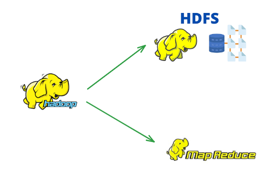

Learn Hadoop
Your structured path to mastering Hadoop!

Your structured path to mastering Hadoop!
Being part of progressive civilization, we currently living in digital era means data is everywhere. We evolved so much such that nowadays every indivisual is generating GigaBytes of data on daily basis...

To deal with this we significantly improves our storage with time, but haven't evolved much in improving accessing speed. Also the writting speed is more worse than read.
One Approach to deal with it would be reading data in parallel from different sources as it significantly increases throughput. Lets simplify what i want to say :
Imagine you have a massive library representing our vast storage capacity. Over the years, we've built larger libraries, but the speed at which a single librarian can retrieve and read a book hasn’t improved much. Additionally, copying (or writing) new books into the library takes even longer than reading them.

Now, picture this: instead of relying on just one librarian to handle all requests, you bring in several librarians who can work simultaneously. Each librarian goes to a different section of the library and retrieves or copies books in parallel. By doing this, the overall process speeds up dramatically because you’re not waiting for one slow librarian to finish before starting another task.

In technical terms:
So thats mean we have solved the issue 😁. Well Yes, but not completely whenever we are dealing with distributed envoirments there are scenraio we have to keep in mind that occurs.
Let's talk about them one by one:
Our main aim is to improve data access, which means we have to access data in a parallel manner. To achieve this, we must ensure that our data is stored in different destinations or partitioned into multiple parts so that parallel access can happen. To do so we can have namespaces or different commodity hardwares creating network for distributed envoirment.

Here comes actual problem when dealing with multiple systems, there always a chance that one could fail. This failure leads to loss acess to the data chunk that is owned by failure node or device.

Solution to this Case : Replication
Replication is a technique through which mulitple copies of data is generated and stored in different
systems so that if a system shuts, we can serve the data through another system. We call this
RAID (Redundant Array of Independent Disks) however it is not used in Hadoop because it
works on Hadoop Distributed File System (HDFS). We will talk about this later breifly.

RAID stands for Redundant Array of Independent (or Inexpensive) Disks. It is a data storage virtualization technology that combines multiple physical drives into a single logical unit to:
RAID was created to solve limitations in early storage systems, such as low reliability and slow access speeds. It allows data to be distributed and managed across multiple drives, enabling faster parallel access and recovery from hardware failure.
RAID combines multiple physical disks using one of the following methods:
Here are the most common RAID configurations:
| RAID Level | Technique | Minimum Drives | Fault Tolerance | Performance | Use Case |
|---|---|---|---|---|---|
| RAID 0 | Striping | 2 | No | High | High-speed processing |
| RAID 1 | Mirroring | 2 | Yes | Good | Critical data storage |
| RAID 5 | Striping + Parity | 3 | 1 disk failure | Good | General storage with fault tolerance |
| RAID 6 | Striping + Dual Parity | 4 | 2 disk failures | Good | High availability |
| RAID 10 | Striping + Mirroring | 4 | Yes | Excellent | High-speed + redundancy |
We have solved the issue for delayed (read and write) operations but this create a mess it leads us to another condition where we have to deal with how to combine the data that is extracted from different sources. If you think it is such a tedious and challenging task.
To deal with this hadoop introduces Map-Reduce provides a programming model. It helps in converting data into key-value pairs to deal with this. This hadoop paradign made of 2 different components. Map Component and Reduce Component and Map-Reduce acts like interface between these two where mixing occurs.
In short what we can say that HDFS is basically for storage purpose and Map-Reduce is used for Analysis or Computation
As we think about each queery we execute, we have to process entire dataset or good portion of it. It appers to be a brute force approach. Map-Reduce acts like a batch querry processor which means we can execute querry againt whole dataset in reasonable time.
We can use databases with lot of disks for large-scale batch analysis !!! The problem with this approach is related to disk trend which says that seek time is more slower than transfer rate.
So Map-Reduce best fits in this scenario because we are doing ad-hoc analysis (Method of anlayzing data to answer specific question or address problem that arises in a moment) in batch fashion. It means that it is well suited for the application which works on written-once and read-multiple methodology.
| Attribute | RDBMS | MapReduce |
|---|---|---|
| Data Size | Handles GB to TB of data efficiently | Designed for PB-scale data processing |
| Access | Supports fast, random access using indexes | Optimized for batch processing, not real-time |
| Update | Allows real-time updates and transactions | Not suitable for real-time updates |
| Structure | Structured data with fixed schema (tables) | Semi-structured or unstructured data |
| Integrity | Strong ACID compliance | No ACID support, focuses on eventual consistency |
| Scaling | Vertical scaling (limited by hardware) | Horizontal scaling (adds more nodes) |
Databases are designed for structured data, while Hadoop MapReduce operates well on semi-structured or unstructured data. (You might be wondering how? 🧐) MapReduce processes data at runtime by interpreting it during the processing phase.
MapReduce is a **linearly scalable programming model**, which means a programmer needs to write two separate functions: **Map function** and **Reduce function**. These functions work on key-value pairs, transforming one set of key-value pairs into another. Both functions are independent of each other, meaning the output of the Map function is processed by the Reduce function without any direct dependency between them.
Both functions depend on two key parameters:
| Factor | Effect on Performance | How to Optimize |
|---|---|---|
| Size of Input Data | Larger data increases processing time and I/O load. | Split data into optimal block sizes and use efficient shuffling. |
| Number of Clusters | More clusters improve parallelism and reduce processing time. | Balance cluster count to avoid under- or over-utilization. |
MapReduce is a linearly scalable programming model. This means that:
The Map function and Reduce function are independent of the size of the data or the cluster size. Therefore, they can handle small and large datasets without modification.
Some key points:
Hadoop actually processes multiple subsets of data in different processes using all available hardware threads of the machine.

When dealing with the Map-Reduce programming model, there is something we have to focus on:

To deal with this scenario, Hadoop creates fixed chunk sizes of data. This helps in utilizing memory properly and ensures that equal data proportions are sent to all processes. Note: In this case, the overall time is majorly dominated by the process with the longest execution time. Also, here we are limited to the processing capacity of a single machine.

To understand this, we have to understand the flow of execution: MapReduce works by breaking processing into two phases:
The Map function is useful when preparing data or removing bad records. It takes input as key-value pairs and outputs results in the same key-value format. Once the Map function completes its work, before the data is sent to the Reduce function, the Map-Reduce framework processes it (e.g., sorting, grouping) with key-value pairs.
At last, the Reduce function works to find results as defined by the query. In code, we divide the task into three smaller subparts:
Since Map-Reduce works with smaller inputs, we need to store data in a distributed filesystem called Hadoop Distributed Filesystem (HDFS). It helps Hadoop navigate Map-Reduce computations to each machine hosting the part of data.
When Hadoop starts processing, it assigns Map-Reduce jobs (units of work done as per client requirements). It consists of:
Two types of nodes are responsible for job execution:

One approach to deal with this is to transfer data from the data node to the node performing the Map-Reduce job. But if we try doing this, it will result in high network load and slow processing.

Since it is not the best approach, we have another option (like reversing the approach). What if instead of sending data, we send the map-reduce task (execution program) to the data node? Since it is relatively much smaller in size, it will not cause any load issue and is more efficient. Hadoop tries to avoid transferring data over networks by moving the map task to the node where the data is stored. This approach is called Data Locality Optimization. It improves processing performance (data is processed locally as everything resides in a single node) and reduces congestion.

To provide fault tolerance and high availability, each data block is replicated to three nodes.

Hadoop always tries to assign map tasks to nodes where data resides. For example, if data is present in NodeA, NodeB, and NodeC, Hadoop tries to assign the job to NodeA, NodeB, or NodeC directly.

There is definitely a possibility of not being able to assign the same node for mapping and data because it might be mapped to some other data node. In this case, Hadoop tries the next best option for assigning mapping. Let's understand all possible options:
Hadoop’s mapping nodes can be assigned in three possible cases. Let's go through each one:
Whenever a job is assigned, Hadoop always first tries to assign the job to the same node where the data resides. This is the most efficient case because the data is processed locally, avoiding any network load.
If the same node is busy or unavailable, Hadoop tries to assign the job to another node within the same rack that holds a replica of the data. This is slightly less efficient than Case 1 but still reduces network congestion since nodes within the same rack have high-speed connections.
If no node within the same rack is available, Hadoop assigns the job to a node outside the rack. This is the least efficient scenario since it requires transferring data over the network, leading to higher latency and increased network load.

Things To Remember :